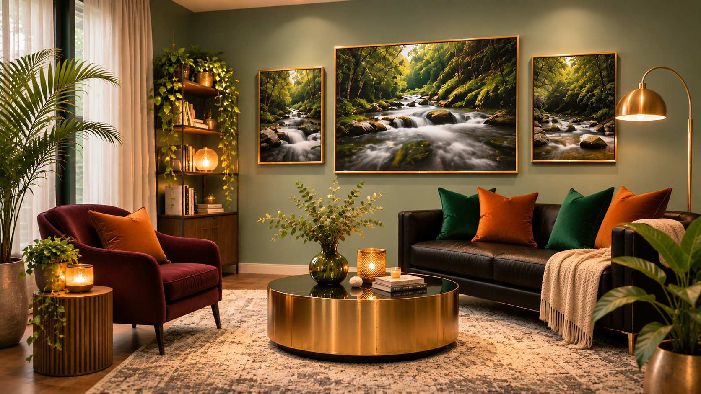
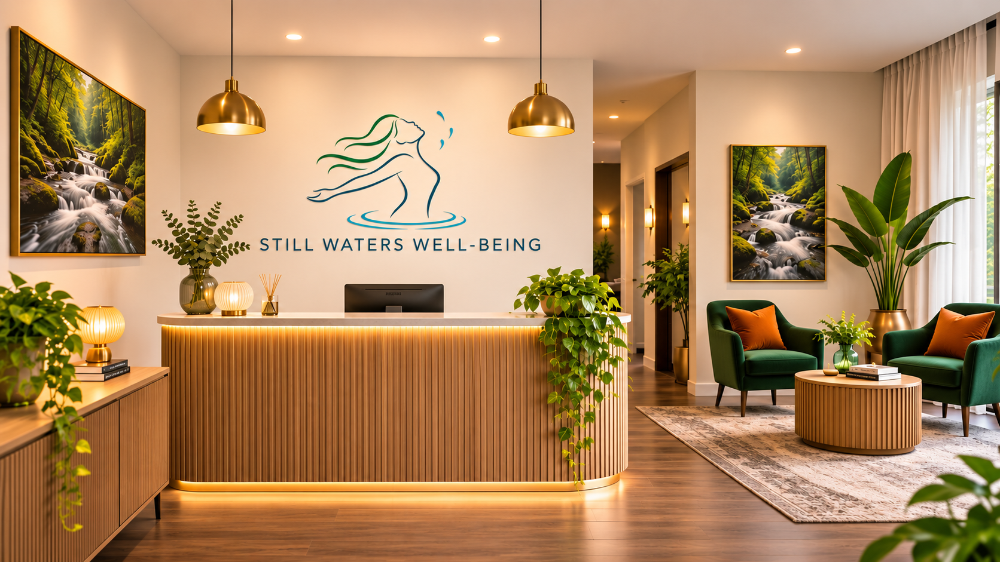

Anxiety & mood concerns
Panic attacks, social anxiety, generalised anxiety, obsessive-compulsive difficulties and depression.
When life feels heavy, you deserve a space where you can pause, feel heard and begin to find your way forward. Compassionate, evidence-based psychological support for adults.
When anxiety feels constant, when low mood makes everyday life heavier, or when relationships and past experiences feel difficult to carry, it can be hard to know where to turn.
Still Waters Well-Being is a warm and professional psychology practice serving the Mornington Peninsula region and beyond. We provide holistic, evidence-based treatment and support for adults experiencing mental health and life challenges.
Whenever you're ready, you are welcome to reach out. Together, we can explore your needs and work towards greater understanding, resilience and well-being.
From the moment you arrive, we want the practice to feel welcoming, grounded and comfortable. Explore the reception and therapy spaces at Still Waters Well-Being.


Everyone arrives with a different story. Support is shaped around your experiences, needs and goals.
Panic attacks, social anxiety, generalised anxiety, obsessive-compulsive difficulties and depression.
Spouse and partner conflict, affairs, family and parenting relationships, and work-related relationships.
Traumas related to bullying, physical assault, sexual abuse, accidents, family-of-origin issues, childhood trauma, past domestic violence, PTSD and complex trauma. Current and ongoing domestic violence is outside the practice's scope.
Anger management and emotional regulation issues.
Work-related issues and challenges.
Grief and loss, chronic insomnia, confidence building, assertiveness, people-pleasing, guilt, communication and boundary setting.
Our approach is evidence-based, trauma-informed and relational, with a focus on meaningful growth and resilience. Therapy offers an opportunity to explore your experiences, develop understanding and build skills that support change.
There is no expectation to have everything worked out before you begin. The first step can simply be a conversation.
Still Waters Well-Being is managed by Clinical Psychologist Michelle Wong, who brings over 20 years of experience working in mental health.
Michelle is compassionate and experienced in working with a range of psychological and mental health concerns. She welcomes adults seeking a thoughtful, confidential and collaborative space to work through life's challenges.
We want you to understand the practical details of accessing support before your first appointment.
The standard consultation fee for private and Medicare-referred appointments is $249.
A valid Mental Health Treatment Plan and GP referral entitle eligible clients to up to 10 Medicare rebates per calendar year.
The Medicare rebate listed for a standard 50-minute session with a Clinical Psychologist is $149.05. The approximate gap fee is $90.
Consultations are offered in person at the Mornington practice. In-person consultations are preferred and strongly encouraged. Phone consultations may be available for follow-up appointments, but are not offered for first appointments.
Session duration: 50 minutes.
These are the usual operating days and hours and may change. Please enquire to confirm availability.
A little more information about what to expect when accessing support.
Before services commence, you will be asked to complete an online intake form. This form collects personal information such as your contact details and relevant background information. It also outlines the practice's service policies for your review and consent.
Sessions are 50 minutes, allowing time for therapeutic exploration and guidance tailored to your needs.
Following your session, your clinician allocates an additional 10–30 minutes to administrative responsibilities, including completing detailed session notes. For clients with a GP Mental Health Treatment Plan and GP referral, periodic updates to the referring GP may also be completed to support continuity of care.
Please provide at least two business days' notice (Monday to Friday) for appointment changes or cancellations. Late cancellations or non-attendance incur 100% of the scheduled fee. To make changes or cancel an appointment, please email adminStillWatersW@yahoo.com.au or leave an SMS message on 0403 002 436.
Phone consultations may be available for follow-up appointments, but are not offered for first appointments. In-person consultations at the Mornington practice are preferred and strongly encouraged.
No. Still Waters Well-Being is not an emergency service and cannot guarantee an appointment at short notice. If you need immediate help, contact emergency services or attend your nearest hospital emergency department. Support contacts are listed below.
If you have any questions or enquiries, you are welcome to contact Michelle directly by email or complete the online booking form. Michelle will get back to you within two business days. Please include relevant background information about the nature of your enquiry.
Please also check your Junk or Spam folder for email responses.